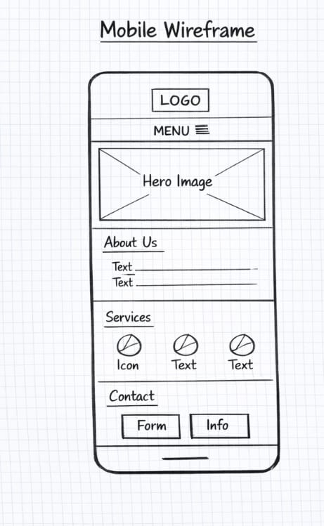

Z-Trans Cooling - Website Plan
Site Name

Site Name: Z-Trans Cooling
This name represents a transport refrigeration company specializing in truck and van refrigeration systems.
It reflects my business vision and professional expertise.
Optional domain availability: z-transcooling.com
Site Purpose
The purpose of the Z-Trans Cooling website is to provide information about the company’s services,
educate visitors about refrigeration technology, industries served, and provide contact information.
Scenarios
- What refrigeration solutions are available for my truck or van?
- How do I schedule maintenance or repair for my transport refrigeration unit?
Planned Content
- Home / About Us: Overview of company and mission.
- Services: Installation, maintenance, repair, emergency solutions.
- How Refrigeration Systems Work: Explanation and benefits.
- Industries Served: Food, pharmaceuticals, cold-chain transport.
- Contact: Phone, email, address, inquiry form.
- Optional Extras: Testimonials, gallery of vehicles and units.
Typography
The primary font used for this website is Roboto.
- Roboto: Used for all headings, body text, and navigation to ensure readability and a clean,
professional appearance.
Wireframes
Mobile View Wireframe
The mobile wireframe focuses on a vertical layout with a collapsible navigation menu,
clear headings, and easy access to services and contact information.

Large Screen View Wireframe
The desktop wireframe uses a wider layout with horizontal navigation,
featured sections, and more detailed content visible at once.

Color Schema
- Primary Color: #15054a — headings, buttons, accents.
- Secondary Color: #004466 — subheadings, navigation
links, footer text.
- Background: #f9f9f9
- Paragraph text: #333
Reason for Choosing This Subject
I chose this subject because I am a transport refrigeration technician, and this field directly relates to
my professional experience.
I aspire to own a transport refrigeration business, Z-Trans Cooling, in the future.
Developing this website allows me to combine my technical expertise with web development skills.